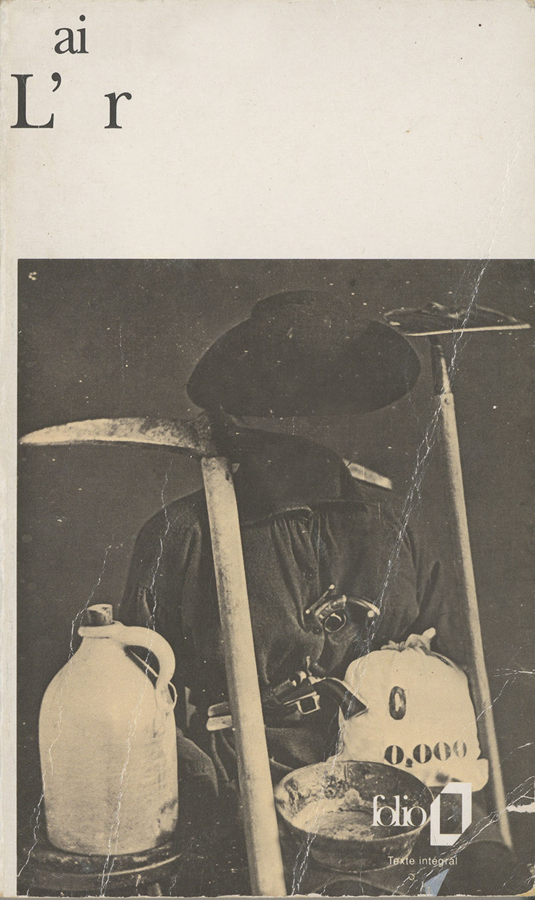
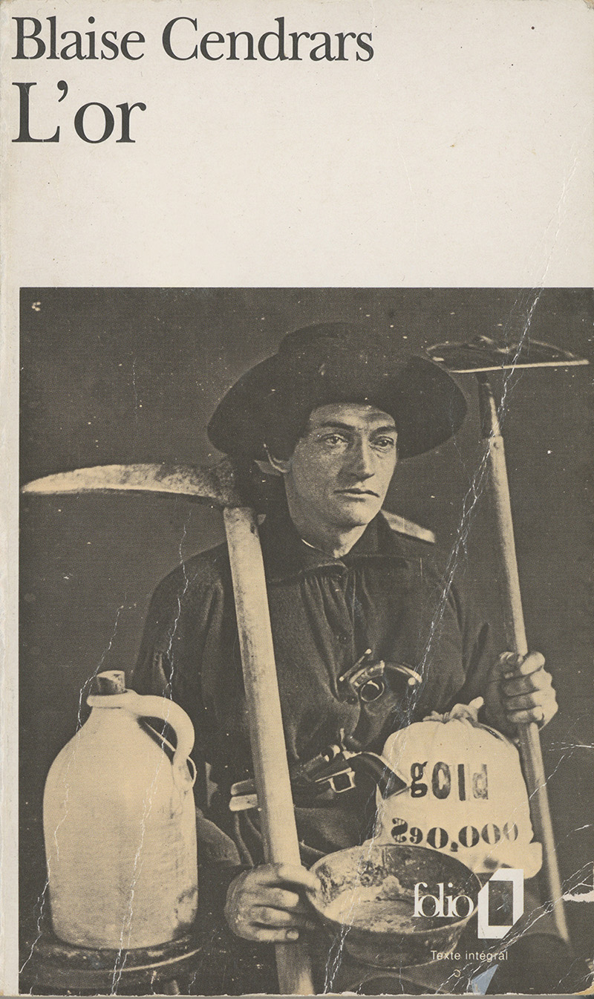

L'air
2017
Impression
10,8 x 17,7 cm
Dans son fameux Artistes sans œuvres, Jean-Yves Jouannais évoque la passion de Blaise Cendrars pour les titres de romans. Dans son Manuel de la bibliographie des livres jamais publiés ni même écrits, ce dernier conservait un nombre important de titres de son cru, qu’il n’a jamais développés. En écho à ce répertoire de livres fantômes, j’ai sensiblement modifié la couverture d’un roman de l’auteur en question — bel et bien écrit, celui-là. L’or éponyme, à l’aise, subtilise à Blaise une partie de son prénom, pour perdre un peu de lest.